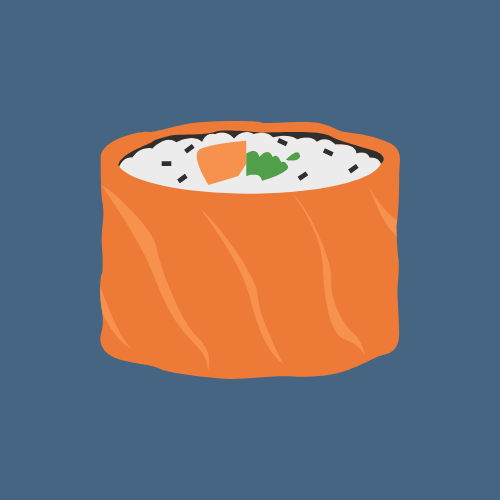

Maki Rolls

Description
Maki Roll is the second delicious thing there is. If you failed to make salmon nigiri, maybe try a maki rolls instead!
Ingredients
- Sushi Rice
- Sushi vinegar
- Nori seaweed
- Soy sauce
- Ginger
- Wasabi (optional)
Steps
- Prepare sushi rice. Mix it with rice vinagar.
- Prepare sushi rolling mat.
- Place a sheet of seaweed on the mat, cover most of your nori with your sushi rice.
- Add ingredients in a line on top of the rice.
- Roll the sushi
- Cut the sushi roll.
- Enjoy!
Home